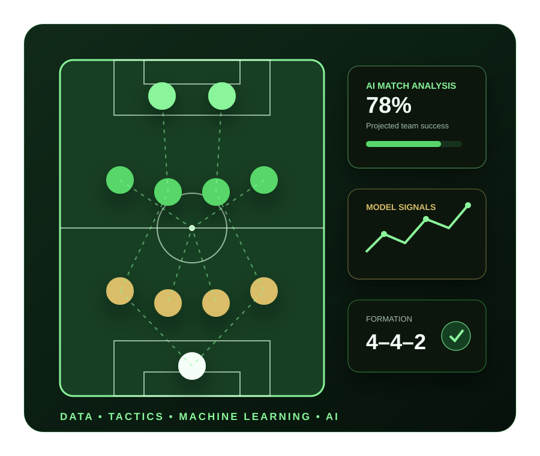

AI IN SPORTS · FOOTBALL INTELLIGENCE
GamePlan AI
Football Strategy Dashboard Using Agentic AI
A football analytics application that combines player intelligence, squad generation, tactical visualization, machine-learning prediction, and AI-assisted development in one interactive experience.

PROJECT OVERVIEW
Turning football data into tactical intelligence
GamePlan AI is an AI-powered football analytics application inspired by the global excitement around the 2026 World Cup. The project brings together football data, visual squad planning, machine-learning experimentation, and agentic AI-assisted software development.
Users can explore player profiles, review performance indicators, generate a balanced eleven-player squad, visualize tactical positions, and evaluate team potential through data-driven prediction logic.
PROBLEM STATEMENT
Squad selection requires more than one statistic
Building a competitive football team requires balancing player position, recent form, age, club context, role coverage, and tactical structure. Traditional data tables make these relationships difficult to interpret. GamePlan AI transforms structured player data into an accessible workflow that moves from player exploration to formation planning and prediction.
KEY FEATURES
A practical football analytics workflow
Player Intelligence Browser
Explore player name, position, age, nationality, club, height, image, and form rating from a structured football dataset.
Grounded Player Summary
Converts player attributes into clear AI-style insights while staying grounded in the available data.
Random Squad Generator
Selects eleven unique players and attempts to maintain balanced positional coverage.
Formation Visualizer
Places forwards, midfielders, defenders, and goalkeeper on a responsive football pitch.
Performance Analytics
Transforms individual player measurements into meaningful squad-level indicators and comparisons.
Prediction Experience
Applies machine-learning concepts to estimate team success and explain the result in an understandable way.
AI & MACHINE LEARNING
An explainable sports intelligence pipeline
Data Ingestion
Structured player and team records from local files or APIs.
→
Data Preparation
Cleaning, normalization, missing-value handling, and validation.
→
Feature Engineering
Form, role balance, squad strength, and tactical indicators.
→
ML Prediction
Probability-based team success scoring using Python and scikit-learn.
→
Explainable Output
Prediction results, supporting factors, and visible limitations.
Machine-learning concepts demonstrated
- Supervised learning and classification thinking
- Feature engineering from player-level attributes
- Training and inference separation
- Accuracy, precision, recall, F1, and ROC-AUC awareness
- Probability-based predictions instead of absolute certainty
Agentic AI-assisted development
IBM Bob was used as an AI development assistant to inspect the project, generate components, troubleshoot code, and accelerate implementation. Human judgment remained central for requirements, architecture, data quality, responsible AI, testing, and final delivery.
TECHNICAL ARCHITECTURE
Designed for modular growth
Streamlit
Hosts the live analytics and prediction experience through a practical Python-based interface.
React + Carbon Design
Supports reusable player cards, selectors, responsive layouts, and tactical visual components.
Python + scikit-learn
Supports data preparation, model experimentation, training, evaluation, and prediction logic.
JSON + Football APIs
Structured data can be expanded with reliable public or licensed football data sources.
RESPONSIBLE AI
Predictions support decisions; they do not replace them
Transparency
Show the factors and data behind each recommendation or prediction.
Data Quality
Validate source fields, missing values, duplicates, and outdated records.
Fairness
Avoid treating club, nationality, or limited historical data as automatic proof of ability.
Human Judgment
Use analytics as decision support while keeping coaches and analysts in control.
FUTURE ENHANCEMENTS
Next steps for a stronger football intelligence platform
Live match and injury dataPlayer similarity modelingTransfer-value predictionOpponent strategy recommendationsFormation optimizationModel monitoring and drift detectionNatural-language tactical assistantCloud-hosted prediction API
EXPLORE THE PROJECT